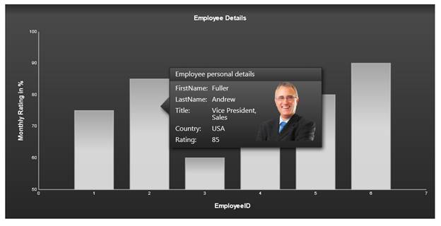

The ToolTip feature allows users to display ToolTips for the chart points, series, and area by using custom string formatting.
By using the ShowToolTips property, you can enable ToolTips for all chart regions. To render all the ChartRegions, you need to set the ChartModel.Calcregions property to true.
Essential Chart supports ToolTips in different areas of the chart which comes with multiple customization options.
The different ToolTips in the chart can be turned off by using the control's ShowToolTips property.

Figure 8: MVC Chart with Rich ToolTip